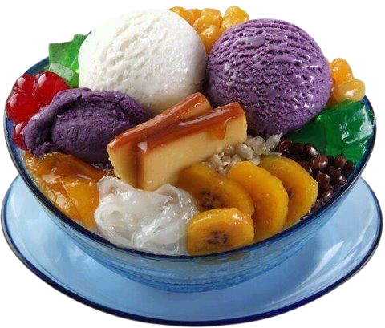

Halo-Halo

The pride of Tiwi, Albay, this halo-halo highlights local ingredients like pili nuts, coconut strips, ube halaya, and sweetened fruits.
[ Read More ]Pili Nut Brittle

The pili nut, one of Bicol’s most treasured products, is known for its buttery texture and rich flavor.
[ Read More ]Pili Nut Brittle

The pili nut, one of Bicol’s most treasured products, is known for its buttery texture and rich flavor.
[ Read More ]